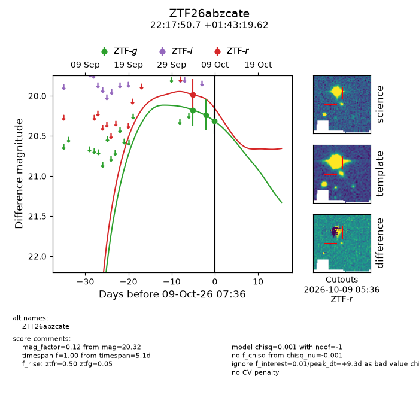
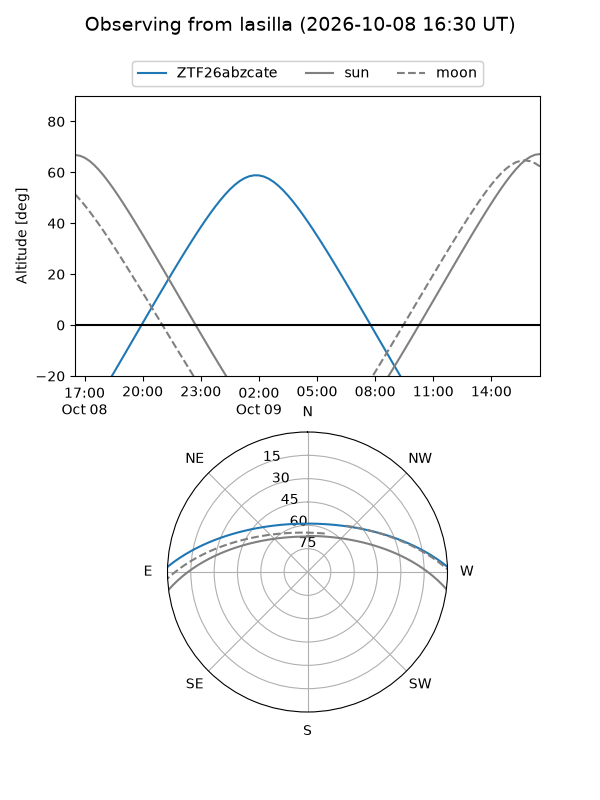
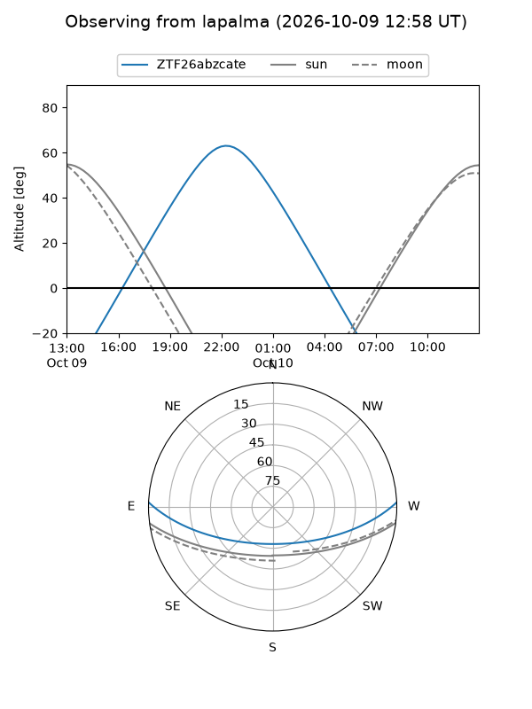
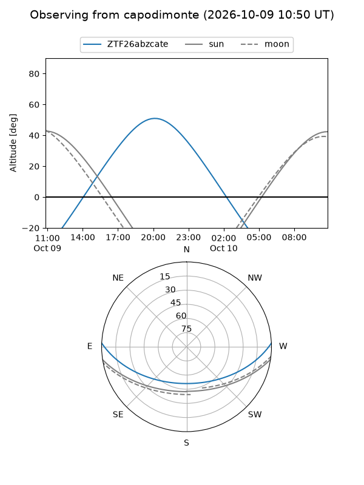
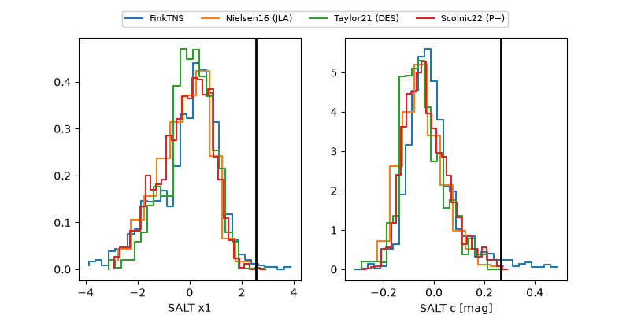

ZTF26abzcate
Target ZTF26abzcate at 2026-10-09 07:39
Aliases and brokers:
FINK-ZTF: ztf.fink-portal.org/ZTF26abzcate
Lasair-ZTF: lasair-ztf.lsst.ac.uk/objects/ZTF26abzcate
ALeRCE-ZTF: alerce.online/object/ZTF26abzcate
Direct TNS query: direct search
alt names
ZTF26abzcate (ztf,fink_ztf)
Coordinates:
equatorial (ra, dec) = 334.4614,+1.72212
equatorial (HMS+DMS) = 22:17:50.75,+01:43:19.62
galactic (l, b) = (64.6658,-43.11607)
Flags:
peak dt: +9.3
Photometry:
last ztfg=20.32, ztfr=19.99
3 ztfg, 1 ztfr detections
Lightcurve

Visibility



Additional plots
